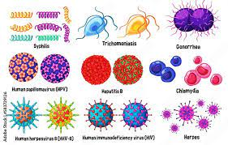

según la información de la que se dispone actualmente, más de 30 bacterias, virus y parásitos diferentes se transmiten por contacto sexual, incluido el coito vaginal, anal o bucal. Algunas ITS también pueden transmitirse de la madre al hijo durante el embarazo, el parto y la lactancia. Ocho son los agentes patógenos vinculados a la máxima incidencia de ITS.
Cuatro de esas infecciones se pueden curar actualmente: la sífilis, la gonorrea, la clamidiasis y la tricomoniasis. Las otras cuatro son infecciones víricas incurables: la hepatitis B, la infección por el virus del herpes simple (VHS), la infección por el VIH y la infección por el virus de los papilomas humanos (VPH).
A ellas se suman los brotes emergentes de nuevas infecciones que pueden contraerse por contacto sexual, como la viruela símica, las infecciones por los virus Shigella sonnei o Neisseria meningitis, o el ébola y el zika, así como la reaparición de ITS desatendidas como el linfogranuloma venéreo. Todas ellas presagian retos crecientes en la prestación de servicios adecuados para 1
Cada día, más de un millón de personas contraen una infección de transmisión sexual (ITS); la mayoría de los casos son asintomáticos.
Se estima que, anualmente, unos 374 millones de personas contraen alguna de estas cuatro ITS, todas ellas curables:
clamidiosis, gonorrea o blenorragia, sífilis y tricomoniasis.
Se estima que más de 500 millones de personas (de 15 a 49 años) tienen una infección genital por el virus del herpes simple (VHS o herpes) (1).
La infección por el virus de los papilomas humanos (VPH) está asociada a más de 311 000 muertes por cáncer de cuello uterino cada año (2).
Se calcula que, en 2016, casi un millón de mujeres embarazadas tenían sífilis y que esta infección causó complicaciones en más de 350 000 partos (3).
Las ITS tienen un efecto directo en la salud sexual y reproductiva por la estigmatización, la infecundidad, los cánceres y las complicaciones del embarazo y pueden aumentar el riesgo de contraer el VIH.
La farmacorresistencia constituye un obstáculo importante para reducir la carga de las ITS en el mundo. Algunas ITS, como el herpes, la gonorrea y la sífilis, pueden aumentar el riesgo de infección por el VIH. La transmisión de una ITS de la madre al hijo puede causar muerte prenatal o neonatal, prematuridad e insuficiencia ponderal del recién nacido, septicemia, conjuntivitis neonatal y anomalías congénitas
La infección por el VPH causa cáncer de cuello uterino y otros cánceres.